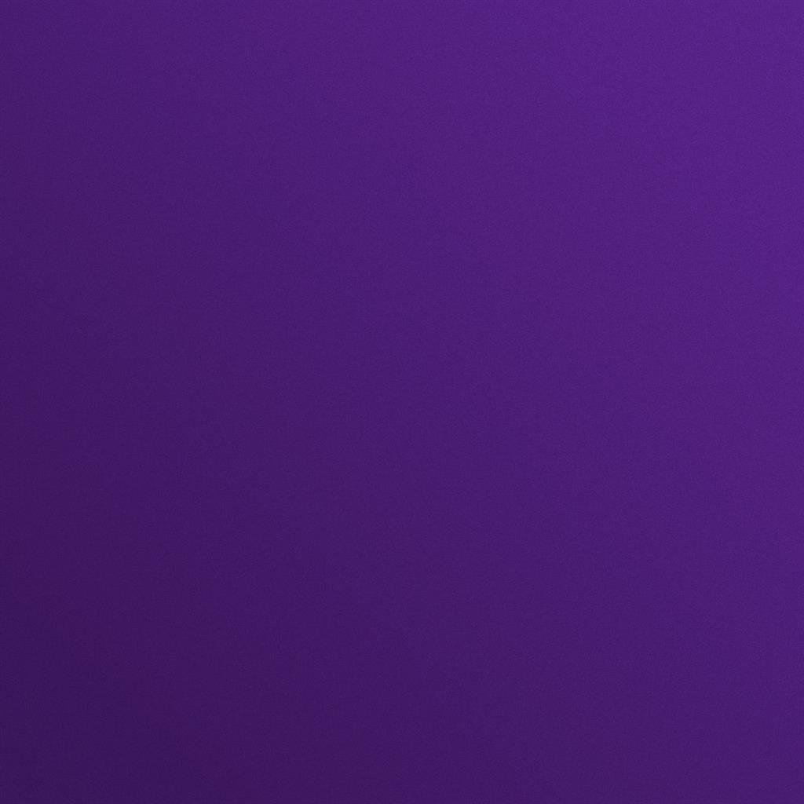

Muzyka: mogę słuchać różnych gatunków muzyki . Na mojej liście odtwarzania jest wiele różnych piosenek: pop, post-punk, Fonk i inne
Ulubiony kolor: naprawdę trudno wymienić tylko jeden kolor. ale z moich ulubionych mam czarny i fioletowy
Danie: Kilka z najulubionych: